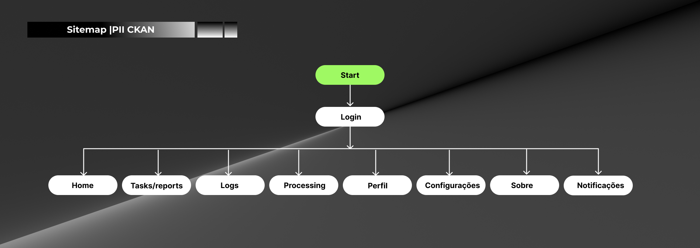
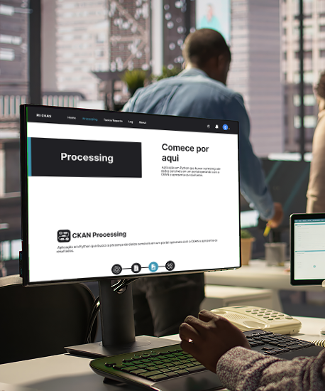
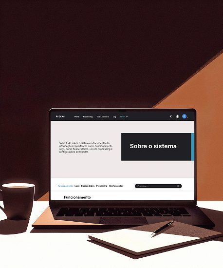

.png)
O PII CKAN é uma solução de governança e privacidade de dados desenvolvida em parceria com a Citinova para o ecossistema de Dados Abertos de Fortaleza. A ferramenta atua como um scanner inteligente que automatiza a detecção de informações pessoalmente identificáveis (PII) em datasets massivos. O projeto foi vencedor do 1º lugar no Prêmio Fortaleza no Controle (categoria Transparência), sendo reconhecido por sua eficácia em garantir que a transparência pública caminhe lado a lado com a proteção à privacidade dos cidadãos.
CITINOVA
Fortaleza, CE - BRA
Product Designer & Front-end Developer
Com a implementação da LGPD, servidores públicos enfrentaram um dilema crítico: como manter portais de dados brutos sem expor indevidamente CPFs, telefones e endereços? O desafio era técnico e operacional, pois a revisão manual de milhões de registros era humanamente impossível. Minha missão foi ajudar a conceber uma ferramenta que auditasse arquivos em diversos formatos (CSV, PDF, XLSX) e entregasse um diagnóstico preciso para mitigar riscos jurídicos e éticos antes da publicação.
Foi entregue uma solução técnica robusta composta por: Modelagem de Processos para varredura de arquivos, Engine de busca baseada em Expressões Regulares (Regex), Interface de Relatório Diagnóstico (Reporting UI) e documentação técnica completa para o ecossistema Open Source. A ferramenta permite que o administrador identifique instantaneamente em qual arquivo e linha os dados sensíveis estão localizados, acelerando o ciclo de auditoria em mais de 100%. Além disso, UX/UI bem definidos de acordo com o usuário final, design system bem elaborado, reduzindo fricções e curvas de aprendizado.
O design de interface do PII CKAN foi focado em visualização de dados e clareza técnica. Projetar relatórios para ferramentas de linha de comando (CLI) exige uma hierarquia rigorosa para que o usuário não se sinta sobrecarregado. Utilizei uma estética limpa e funcional, focada em sinalizar estados de alerta e segurança. A arquitetura de informação foi desenhada para facilitar a triagem de incidentes, garantindo que mesmo usuários com perfil administrativo pudessem interpretar os resultados técnicos da varredura, independente do seu grau de senioridade com dados e relacionados.
Fui responsável pelo desenvolvimento do front-end da primeira versão da aplicação, focando na fidelidade visual e performance de leitura. Transformei os dados brutos processados pelo motor em Python em uma interface de relatório amigável. Atuei diretamente no levantamento de requisitos técnicos junto aos especialistas de dados, garantindo que o front-end consumisse corretamente as informações do sistema e oferecesse uma experiência de diagnóstico resiliente e escalável para o ambiente CKAN.
.png)
Risco de Exposição Mitigado. A ferramenta garantiu uma camada de proteção proativa, impedindo que dados sensíveis (PII) fossem publicados inadvertidamente. O impacto direto foi a blindagem jurídica e ética do município, assegurando que a transparência pública não comprometa o direito à privacidade dos cidadãos conforme a LGPD.
Otimização do Ciclo de Publicação. Antes do PII CKAN, a revisão de datasets massivos era um processo manual e passível de falhas humanas. A automação permitiu que volumes massivos de dados fossem escaneados em minutos, devolvendo tempo valioso aos servidores e acelerando a atualização do portal Dados Abertos.
Padronização de Transparência. O uso da ferramenta elevou o nível de maturidade dos dados enviados pelas secretarias. Ao fornecer um relatório claro de erros, o sistema educou os servidores sobre as melhores práticas de tratamento de dados, resultando em um portal de Dados Abertos muito mais íntegro e confiável para a população.
Selo de Excelência em Inovação. A conquista do 1º lugar no Prêmio Fortaleza no Controle serve como a métrica máxima de validação. O projeto foi auditado e premiado por uma comissão de especialistas da USP e UFC, comprovando sua eficácia técnica e seu valor inestimável para a administração pública.
Reduzir a fricção para os colaboradores. Este projeto me permitiu entender como traduzir leis complexas (como a LGPD) em lógica de programação (Regex e Python). Foi meu maior exercício de transpor requisitos jurídicos para uma interface técnica simplificada.
Boa documentação é essencial. Participar de um projeto de código aberto para o governo me ensinou sobre a importância de criar interfaces escaláveis e documentações claras, permitindo que outros órgãos repliquem a solução com facilidade.
O design do PII CKAN nasceu do diagnóstico de um "gargalo" invisível: a revisão de dados pessoais em arquivos brutos (CSV, PDF, XLSX). Apresentamos o Ricardo, um gestor de dados pragmático que vê sua produtividade limitada por processos lentos e burocráticos. O mapeamento de sua jornada revelou a necessidade crítica de um "filtro de segurança" proativo. O foco do projeto foi transformar o medo do erro humano em uma experiência de auditoria rápida, intuitiva e tecnicamente robusta, devolvendo tempo e segurança institucional ao usuário.
.png)
Para transformar uma ferramenta de script (Python) em uma plataforma intuitiva, projetei uma estrutura baseada na visibilidade de processos e auditoria. O objetivo foi garantir que o gestor de dados tenha controle total sobre as varreduras de segurança, desde a configuração dos parâmetros até o veredito final do relatório.

Para o PII CKAN, utilizei wireframes de média fidelidade para validar a hierarquia de navegação antes da implementação. O foco foi criar um workflow de auditoria de ponta a ponta. Projetei fluxos onde o usuário pudesse configurar uma varredura massiva em poucos cliques, selecionando padrões específicos da LGPD (como CPF e endereços). A inclusão de um Histórico de Relatórios (Tasks) permite que o gestor tenha uma visão retrospectiva da conformidade de dados, transformando uma tarefa técnica exaustiva em um processo de gestão ágil, seguro e escalável.

O desafio visual do PII CKAN foi transformar um processo de auditoria técnica em uma experiência intuitiva e segura. Para isso, desenvolvi um Design System focado em semântica visual, onde cada cor desempenha um papel crítico na tomada de decisão do gestor.

A etapa de alta fidelidade do PII CKAN foi desenhada para oferecer máxima transparência sobre processos de backend. Como varreduras de dados massivos podem levar tempo, o foco da interface foi manter o usuário informado através de loops de feedback contínuos: barras de progresso dinâmicas, contadores de evidências em tempo real e sinalização clara de estados (Buscando, Finalizado ou Erro).
Projetei a experiência para ser "error-proof" (à prova de erros). Um exemplo crítico é o modal de cancelamento de busca, que evita ações acidentais em processos custosos computacionalmente. Transformamos parâmetros técnicos de configuração (como URLs de portal e diretórios de arquivos) em formulários intuitivos com validação imediata, garantindo que o gestor de dados tenha o controle total da ferramenta sem necessidade de conhecimento em programação.

.png)
.png)

.png)

.png)
.png)